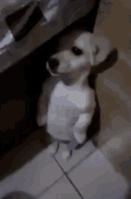

1. Stiker de perro asustado
Como podemos observar este es un stiker en el que se muestra como un perro está asustado, sabe dios por qué.
El proposito de este blog es mostrar una coleccion de los mejores stikers de perros habidos en mi ws, espero mucho que sean de tu agrado.
Como podemos observar este es un stiker en el que se muestra como un perro está asustado, sabe dios por qué.

Este perro obviamente está siendo reprendido.Por lo que podemos apreciar en la imagen
el está
arrepentido, por ello es que mantiene su cabeza agachada, en señal de respeto.

Como podemos apreciar en el stiker a continuacion, éste perro está pasando por un momento muy incomodo
por lo que tiene esa cara de ""que cringe, aiuda".
En el siguinte gif se muestra muy crudamente el momente en el que el pobre cachorro
se da cuenta de que la vida no es como el la esperaba, por eso la expresion de decepcion.